1과목: 화공열역학
1. 실제가스에 관한 설명 중 틀린 것은?
2. 일반적인 삼차 상태방정식 (Cubic Equation of State) 의 매개변수를 구하기 위한 조건을 옳게 표시한 것은?(오류 신고가 접수된 문제입니다. 반드시 정답과 해설을 확인하시기 바랍니다.)
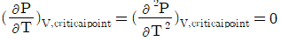
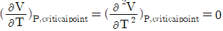
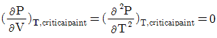
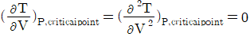
3. 액상반응의 평형상수를 옳게 나타낸 것은?(단, vi: 성분 i 의 양론수 양론수 (stoichiometric number), xi: 성분 i 의 액상 몰분률 몰분률 , yi : 성 분 i 의 기상 몰분률 ,
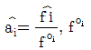
: 표준상태에서의 순수한 액체 i의 퓨개시티,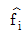
: 순수한 액체 i 의 퓨개 시티 이다.)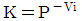
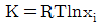
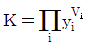
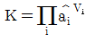
4. 기-액상에서 두 성분이 한가지의 독립된 반응을 하고 있다면, 이 계의 자유도는?
5. 다음 중 일의 단위가 아닌 것은?
6. 다음 중 에너지의 출입은 가능하나 물질의 출입은 불가능한 계는?
7. 다음과 같은 반데르발스(van der Waals) 식을 이용하여 실제 기체의
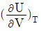
를 구한 결과로서 옳은 것은?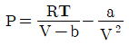
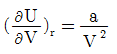
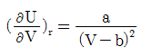
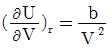
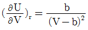
8. 다음의 반응에서 반응물과 생성물이 평형을 이루고 있다. 평형이동에 미치는 온도와 압력의 영향을 살펴보기 위해서, 온도를 올려보고 압력을 상승시키는 변화를 주었을 때 평형은 두 경우에 각각 어떻게 이동하겠는가? (단, 정반응이 흡열반응이다.)
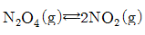
표준반응 엔탈피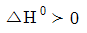
9. 열역학 모델을 이용하여 상평형 계산을 수행하려고 할 때 응용 계에 대한 모델의 조합이 적합하지 않은 것은?
10. 공기표준디젤사이클의 P-V 선도에 해당하는 것은?
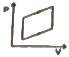
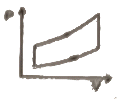
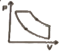
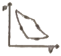
11. 일정압력(3kgf/cm2)dp에서 0.5m3의 기체를 팽창시켜 24000kgf·m의 일을 얻으려 한다. 기체의 체적을 얼마로 팽창해야 하는가?
12. 평형상태에 대한 설명 중 옳은 것은?
13. 1atm, 357℃의 이상기체 1mol을 10atm으로 등온압축하였을 때의 엔트로피 변화량은 약 얼마인가?(단, 기체는 단원자분자이며, 기체상수 R=1.987cal/mol·K이다.)
14. 500K의 열저장소(Heat Reservoir)로부터 300K의 열저장소로 열이 이동된다. 이동된 열의 양이 100kJ이라고 할 때 전체 엔트로피 변화량은 얼마인가?
15. GE가 다음과 같이 표시된다면 활동도계수는? (단, GE는 과잉 깁스에너지, B, C는 상수, γ 는 활동도계수, X1, X2 : 액상 성분 1, 2의 GE/RT=BX1X2+C
16. 이상기체의 단열가역 변화에 대하여 옳은 것은?(단, γ=Cp/Cv 이다.)
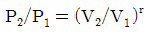
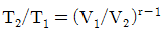
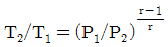
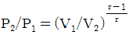
17. 열역학 제3법칙은 무엇을 의미하는가?
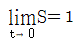
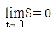
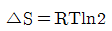
18. 2atm 의 일정한 외압 조건에 있는 1mol 의 이상기체 온도를 10K 만큼 상승시켰다면 이상기체가 외계에 대하여 한 최대 일의 크기는 몇 cal 인가?(단, 기체상수 R=1.987cal/mol·K이다.)
19. 1 mole의 이상기체(단원자 분자)가 1기압 0℃에서 10기압으로 가역압축 되었다. 다음 압축 공정 중 압축 후의 온도가 높은 순으로 배열된 것은?
20. 그림과 같은 공기표준 오토사이클의 효율을 옳게 나타낸 식은? (단, a는 압축비이고 r은 비열비(Cp/Cv)이다.)
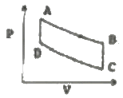
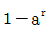
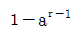
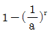
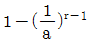
2과목: 단위조작 및 화학공업양론
21. 물질의 물질의 증발잠열 증발잠열 (Heat of vaporization)을 예측하는데 예측하는데 사용되는 사용되는 식은?
22. 0℃, 800atm에서 O2의 압축계수는 1.5이 다. 이 상태에서 산소의 밀도 (g/L)는 약 얼마인 얼마인 가?
23. 밀도 1.15g/cm3 인 액체가 밑면의 넓이 930 cm2, 높이 0.75m 인 원통 속에 가득 들어있다. 이 액체의 질량은 약 몇 kg 인가?
24. 1mol의 NH3를 다음과 같은 반응에서 산화시킬 때 O2 를 50% 과잉 사용하였다. 만일 반응의 완결도가 90%라 하면 남아있는 산소는 몇 mol 인가?
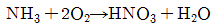
25. 이상기체의 정압열용량 (Cp)과 정용열용량 (Cv)에 대한 설명 중 틀린 것은?
26. 이상기체법칙이 적용된다고 가정할 경우 용적이 5.5m3인 용기에 질소 28kg을 넣고 가 열하여 압력이 10atm 이 될 때 도달하는 기체의 온도 (℃)는?
27. 760mmHg 대기압에서 진공계가 100mmHg 진공을 표시하였다. 절대압력은 몇 atm 인가?
28. 실제기체의 압축 인자 (compressibility factor)를 나타내는 그림이다. 이들 기체 중에 서 저온에서 분자간 인력이 가장 큰 기체는?
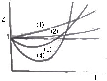
29. 25℃에서 벤젠이 bomb 열량계 속에서 연소되어 이산화탄소와 물이 될 때 방출된 열량 을 실험으로 재어보니 벤젠 1mol 당 780890cal 이었다. 25℃에서의 벤젠의 표준연소열은 약 몇 cal 인가?(단, 반응식은 다음과 같으며 이상기체로 가정 한다.)
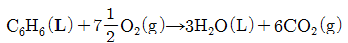
30. 25℃, 대기압하에서 0.38mH2O의 수두압 으로 포화된 습윤공기 100 m3이 있다. 이 공기 중의 수증기량은 약 몇 kg 인가?(단, 대기압은 755mmHg 이고, 1기압은 수두로 10.3mH2O 이다.)
31. 다음 중 디스크의 형상을 원뿔모양으로 바꾸어서 유체가 통과하는 단면이 극히 작은 구 조로 되어 있기 때문에 고압 소유량의 유체를 누설 없이 조절할 목적에 사용하는 것은?
32. 단일효용증발기에서 10wt% 수용액을 50wt% 수용액으로 농축한다. 공급용액은 55000kg/h, 증발기에서 용액의 비점이 52℃이고, 공급용액의 온도 52℃일 때 증발된 물 의 양은?
33. 비중이 1 인 물이 흐르고 있는 관의 양단 에 비중이 13.6인 수은으로 구성된 U자형 마 노미터를 설치하여 수은의 높이차를 측정해보니 약 33cm 이었다. 관 양단의 압력차는 압력차는 약 몇 atm 인가?
34. 교반기 중 점도가 점도가 높은 액체의 경우에는 적합하지 않으나 점도가 낮은 액체의 다량 처리에 많이 사용되는 것은?
35. 매우 넓은 2개의 평행한 회색체 평면이 있다. 평면 1과 2의 복사율은 각각 0.8 , 0.6, 이고 온도는 각각 1000K, 600K이다. 평면 1에서 2까 지의 순복사량은 얼마인가 얼마인가?(단, Stefan-Boltzman 상수는 5.67×10^(-8) W/m2·K^4이다.)
36. 분배의 법칙이 성립하는 성립하는 영역은 어떤 경우 인가?
37. 가로 30cm, 세로 60cm 인 직사각형 단면 을 갖는 도관에 세로 35cm 까지 액체가 차서 흐르고 있다. 상당직경 (equivalent diameter)은 얼마인가?
38. 증류탑의 ideal stage(이상단 )에 대한 설명 으로 옳지 않은 것은?
39. 다음 그림과 같은 건조속도 곡선 (X는 자유 수분 , R은 건조속도)을 나타내는 고체는? (단, 건조는 A→B→C→D 순서로 일어난다.)(문제 복원 오류로 그림파일이 없습니다. 정학한 그림 내용을 아시는분 께서는 관리자 메일로 보내주시면 감사하겠습니다. 정답은 4번 입니다.)
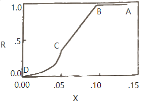
40. 탑내에서 기체속도를 점차 증가시키면 탑 내 액정체량 (hold up)이 증가함과 동시에 압력 손실도 급격히 증가하여 액체가 아래로 이동하는 것을 방해할 때의 속도를 무엇이라고 하는가?
3과목: 공정제어
41. 다음 중 제어밸브를 나타낸 것은?
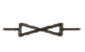
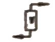
42. 선형계의 제어시스템의 안정성을 판별하는 방법이 아닌 것은?
43. PID 제어기의 전달함수의 형태로 옳은 것은?(단, KC는 비례이득, τl는 적분시간상수, τD는 미분시간상수를 나타낸다.)
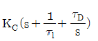
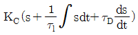
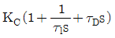
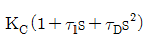
44. 적분공정(G(s)=1/s)을 제어하는 경우에 대한 설명으로 틀린 것은?
45. 다음 공정과 제어기를 고려할 때 정상상태(steady-state) 에서 y(t) 값은 얼마인가? (제어기 :
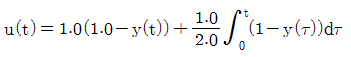
, 공정 :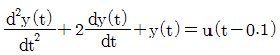
)46. 제어 결과로 항상 cycling 이 나타나는 제어기는?
47. 연속 입출력 흐름과 내부 가열기가 있는 저장조의 온도제어 방법 중 공정제어 개념이라고 볼 수 없는 것은?
48. 1차계의 시상수 τ에 대하여 잘못 설명한 것은?
49. 특성방정식이
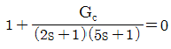
와 같이 주어지는 시스템에서 제어기 GC로 비례제어기를 이용할 경우 진동응답이 예상되는 경우는? (단, KC는 제어기의 비례이득이다.)50. 개루프 전달함수가
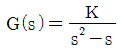
일 때 negative feedback 폐루프 전달함수를 구한 것은?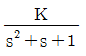
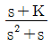
51. s3+4s2+2s+6=0로 특성방정식이 주어지는 계의 Routh 판별을 수행할 때 다음 배열의 (a), (b)에 들어갈 숫자는?
52. 시간지연이 θ이고 시상수가 τ인 시간지연을 가진 1차계의 전달함수는?
53. 어떤 액위저장 탱크로부터 펌프를 이용하여 일정한 유량으로 액체를 뽑아내고 있다. 이 탱크로는 지속적으로 일정량의 액체가 유입되고 있다. 탱크로 유입되는 액체의 유량이 기울기가 1인 1차 선형변화를 보인 경우 정상 상태로부터의 액위의 변화 H(t)를 옳게 나타낸 것은?(단, 탱크의 단면적은 A 이다.)
54. 모델식이 다음과 같은 공정의 Laplace 전달함수로 옳은 것은?(단, y는 출력변수, x는 입력변수이며 Y(s)와 X(s)는 각각 y와 x의 Laplace 변환이다.)
55. 다음 공정에 단위 계단입력이 가해졌을 때 최종치는?
56. Feedback 제어에 대한 설명 중 옳지 않은 것은?
57. 단위계단 입력에 대한 응답 ys(t)를 얻었다. 이것으로부터 크기가 1 이고 폭이 a 인 펄스 입력에 대한 응답 yp(t)는?
58. 입력과 출력사이의 전달함수의 정의로서 가장 적절한 것은?
59. 다음 그림은 외란의 단위계단 변화에 대해 여러 형태의 제어기에 의해 얻어진 공정출력이다. 이 때 A는 무엇을 나타내는가?
60. 여름철 사용되는 일반적인 에어컨(air conditioner)의 동작에 대한 설명 중 틀린 것은?
4과목: 공업화학
61. 황산의 원료인 아황산가스를 황화철광(iron pynte)을 공기로 완전 연소하여 얻고자 한다. 황화철광의 10%가 불순물이라 할 때 황화철광 1톤을 완전연소 하는데 필요한 이론 공기량은 표준상태 기준으로 약 몇 m3 인가?(단, Fe 의 원자량은 56 이다.)
62. 접촉식 황산 제조법에서 주로 사용되는 촉매는?
63. HNO3 14.5%, H2SO4 50.5%, HNOSO4 12.5%, H2O 20.0%, nitrobody 2.5% 의 조성을 가지는 혼산을 사용하여 toluene 으로부터 mononitrotoluene 을 제조하려고 한다. 이 때 1700kg 의 toluene 을 12000kg 의 혼산으로 니트로화했다면 DVS(dehydrating value of sulfuric acid)는?
64. 합성염산을 제조할 때는 폭발의 위험이 있으므로 주의 해야 한다. 염산 합성시 폭발을 방지하는 방법에 대한 설명으로 가장 거리가 먼 것은?
65. 벤젠으로부터 아닐린을 합성하는 단계를 순서대로 옳게 나타낸 것은?
66. 공기 중에서 프로필렌을 산화시켜서 알코올과 작용시켰을 때 얻는 주생성물은?
67. 반도체 제조과정 중에서 식각공정 후 행해지는 세정공정에 사용되는 piranha 용액의 주 원료에 해당하는 것은?
68. 다음 중 가스용어 LNG 의미에 해당하는 것은?
69. 석회질소 비료에 대한 설명 중 틀린 것은?
70. 소다회 제조법 중 거의 100% 의 식염의 이용이 가능한 것은?
71. 산성토양이 된 곳에 알칼리성 비료를 사용하고자 할 때 다음 중 가장 적합한 비료는?
72. 염화수소 가스를 물 50kg 에 용해시켜 20% 의 염산용액을 만들려고 한다. 이 때 필요한 염화수소는 약 몇 kg 인가?
73. 다음 중 1차 전지가 아닌 것은?
74. Fischer-Tropsch 반응을 옳게 표현한 것은?
75. 석유의 접촉개질(catalytic reforming)에 대한 설명으로 옳지 않은 것은?
76. 다음 고분자 중 Tg(glass transition temperature)가 가장 높은 것은?
77. Acetylene 을 주원료로 하여 수은염을 촉매로 물과 반응시키면 얻어지는 것은?
78. 다음 중 고분자의 일반적인 물리적 성질에 관련된 설명으로 가장 거리가 먼 것은?
79. 선형 저밀도 폴리에틸렌에 관한 설명이 아닌 것은?
80. 다음 중 소다회 제조법으로써 암모니아를 회수하는 것은?
5과목: 반응공학
81. 회분식 반응기에서 A 의 분해 반응을 50℃ 등온하에서 진행시켜 얻는 CA와 반응시간 t 간의 그래프로부터 각 농도에서의 곡선에 대한 접선의 기울기를 다음과 같이 얻었다. 이 반응의 반응 속도식은?
82. 매 3분마다 분마다 반응기 체적의 1/2에 해당하는 반응물이 반응기에 주입되는 연속흐름반응 기(steady -state flow reactor)가 있다. 이때의 공 간시간 (τ : space time) 과 공간속도 (S : space velocity)는 얼마인가 얼마인가?
83. 650℃ 에서의 에탄의 열분해 반응은 500℃에서보다 2790배 빨라진다. 이 분해 반응의 활성화 에너지는?
84. 다음 중 불균일 촉매반응에서 일어나는 속도결정단계 (rate determining step)와 거리가 먼 것은?
85. 다음의 액상반응에서 R이 요구하는 물질 일 때에 대한 설명으로 설명으로 가장 거리가 먼 것은?
86. 2차 액상 반응, 2A → products이 혼합흐름반응기에서 60%의 전화율로 진행된다. 다 른 조건은 그대로 두고 반응기의 크기만 두 배로 했을 경우 전화율은 얼마로 되는가?
87. 자동촉매반응 (autocatalytic reaction)에 대한 설명으로 옳은 것은?
88. CSTR 에 대한 설명으로 옳지 않은 것은?
89. 회분식 반응기 (batch reactor)에서 균일계 비가역 1차 직렬 반응 이 일어날 때 R 농도의 최대값은 얼마인가?(단, k1=1.5min-1, k2=3min-1이고 , 각 물질의 초기농도 이다.)
90. 다음과 같은 연속 (직렬) 반응에서 A 와 R 의 반응속도가 일 때, 회 분식 반응기에서 를 구하면?(단, 반응은 반응은 순수한 A 만으로 만으로 시작한다 시작한다.)
91. A 가 분해되는 정용 회분식 회분식 반응기에서 CAO=4mol/L 이고, 8분 후의 A 의 농도 CA를 측정한 결과 2mol/L 이었다. 속도상수 k 는 얼마인가?(단, 속도식은 이다.
92. 및 인 두 액상 반응이 동시에 등온 회분반응기에서 진행된다. 50분 후 A 의 90%가 분해되어 생성물 비는 9.1mol R/1mol S이다. 반응차수는 각각 1차일 때, 반응 속도상수 k2는 몇 min-1인가?
93. 비가역 1차 액상반응 액상반응 A → R 이 플러그 흐름반응기에서 전화율이 50%로 반응된다. 동일조건에서 반응기의 크기만 2배로 하면 전화율은 몇 % 가 되는가?
94. 1개의 혼합 흐름 반응기에 크기가 2배되는 반응기를 추가로 직렬로 연결하여 A 물질을 액상분해 반응시켰다. 정상상태에서 원료의 농도가 1mol/L 이고 , 제1반응기의 평균공간시간 평균공간시간이 96 초이었으며 배출농도가 0.5mol/L이었다. 제2반응기의 배출농도가 배출농도가 0.25mol/L 일 경우 반응속도식은 반응속도식은?
95. 회분식 반응기에서 아세트산에틸을 가수분해시키면 1차 반응속도식에 따른다고 한다. 만 일 어떤 실험조건에서 아세트산에틸을 정확히 30% 분해시키는데 40 분이 소요되었을 경우에 반감기는 몇 분인가?
96. 혼합 흐름 반응기에서 반응 속도식이 -rA=kC2A인 반응에 대해 50% 전화율을 얻었다. 모든 조건을 동일하게 하고 반응기의 부피만 5배로 했을 경우 전화율은?
97. 반응속도상수에 영향을 미치는 변수가 아닌 것은?
98. 다음과 같은 반응에서 최초 혼합물인 반응 물 A가 25%, B가 25% 인 것에 불활성기체가 50% 혼합되었다고 한다. 반응이 완결되었을 때 용적변화율 εA는 얼마인가?
99. 다음 반응에서 R의 순간 수율 (생성된 R의 몰수 /반응한 A의 몰수) 은?
100. 일반적으로 A → P 와 같은 반응에서 반응물의 농도가 C=1.0×10mol/L일 때 그 반응 속도가 0.020mol/L·s 이고 반응속도상수가 k=2×10^(-4)L/mol·s 이라고 한다면 이 반응의 차 수는?